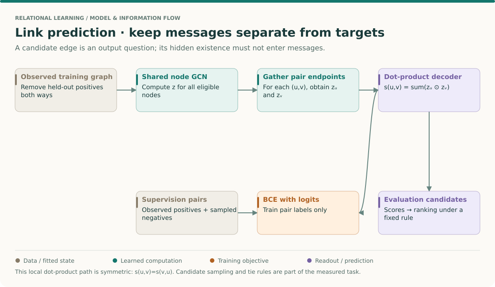
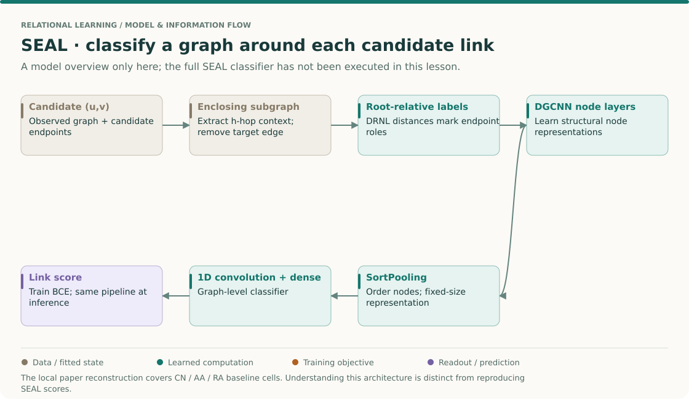
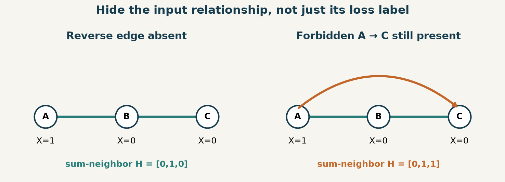
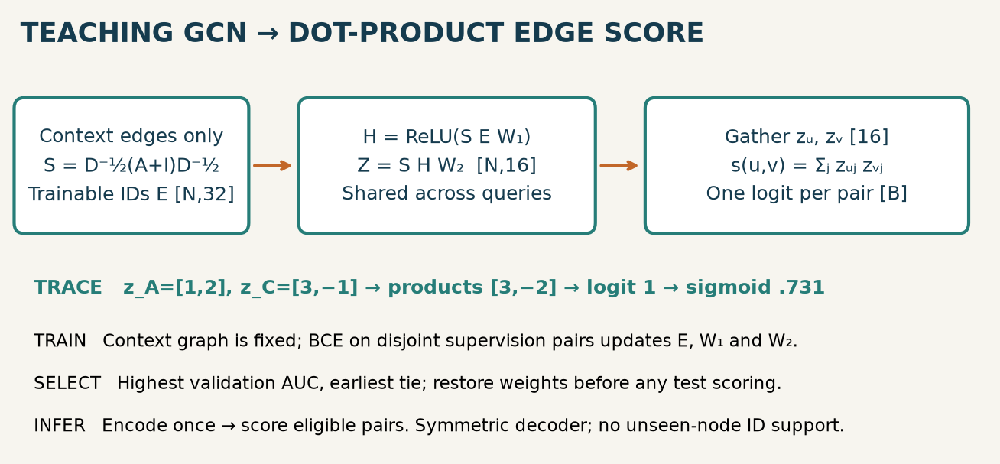
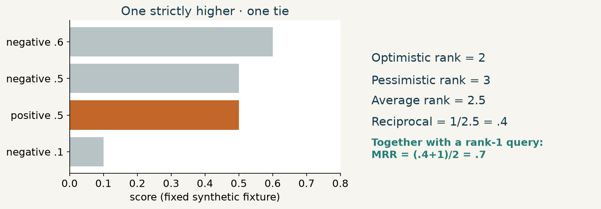
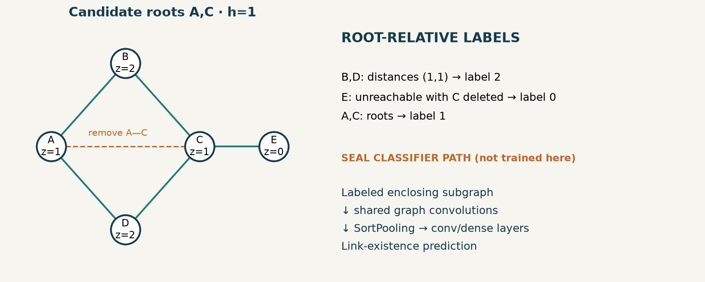
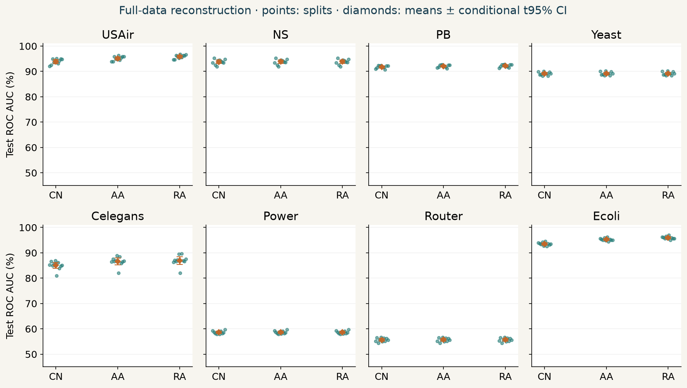
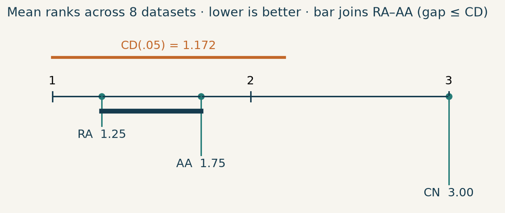

Year 3 · Quarter 1 · Lesson 087
Link prediction: hide the edge, define the candidates
Retrieval before reading · 3 minutes¶
Close lesson 86. For an undirected graph stored as directed messages, how many columns represent one edge? Which data may enter a validation-selected model before test scoring? If every example shares one graph, does splitting example rows necessarily isolate their information?
Check after writing your answers
Usually two directed columns, one in each direction. Training observations fit parameters; validation labels select a state. A row split alone does not isolate a graph: held-out relationships may still appear among the encoder's input edges.
THE BIG PICTURE · LESSON 087
Build on what you know. Lesson 86 made routing explicit. Link prediction introduces a new boundary: the relationship being predicted must not reveal itself through the message graph. Lesson 55's temporal discipline becomes especially important for future interactions.
The next question. Lesson 88 treats graph classification directly. SEAL provides the bridge by converting each candidate link into a labeled enclosing graph, while the simpler dot-product model predicts from two node embeddings.
Open the SSL → relational → graph model map · Work the cold retrieval first, then spend 15–20 minutes tracing this overview before the detailed mechanism and lab.
A link label is not an input edge¶


Read the target construction before the classifier¶
Read Zhang & Chen §4 for SEAL's subgraphs and structural labels, and the OGB link-task specifications for examples of dataset-specific ranking contracts. The neural teaching path, SEAL overview and executed heuristic reconstruction below have different evidence scopes.
Follow one candidate pair through both routes¶
- Separate two edge collections. The observed graph supplies messages. Supervision pairs supply questions and labels. A held-out positive must be removed in both directions from an undirected observed graph; otherwise its reverse direction leaks existence.
- Define a negative. In the local static task it is a sampled absent pair under the declared filtering rule. In a future recommendation task it may instead be an eligible item not interacted with during a time window. These conventions imply different difficulty and meaning.
- Encode then decode. If z_u=[1,2] and z_v=[3,−1], a dot product gives score 1. Swapping endpoints gives the same score, so this decoder cannot distinguish u→v from v→u. A directed task needs a suitable asymmetric decoder or role-specific representation.
- Turn the score into a training objective. A positive example with logit 1 has binary cross-entropy log(1+exp(−1))≈0.3133. A sampled negative with the same score incurs log(1+exp(1))≈1.3133. Use a stable logits loss; the model's task depends on which negative pairs you supply.
- For SEAL, change the representation unit. Extract a neighborhood around the candidate, remove the target edge, and label node roles relative to both endpoints. DGCNN then classifies that whole subgraph. One global embedding per node is no longer the complete input to the predictor.
- Rank within a declared candidate set. A score is not intrinsically a rank. Adding harder candidates can lower MRR without changing any model parameter. Record candidates and tie handling beside the final metric.
Predict: can test-positive edges remain in the graph if their labels are hidden?
Not under this held-out-link protocol. Edge presence itself is the answer being hidden. This differs from transductive node classification, where known edges may be permitted and only node labels are held out.
Your intermediate artifact: save the observed edge set, supervision pairs, negative rule and evaluation candidates for a four-node example. Show which single edge would leak the answer if restored. The full SEAL classifier remains unrun here; its overview does not change that status.
One win: specify exactly what a predicted link means¶
In lesson 86, you made message passing preserve a known graph computation. Now part of that graph becomes the target. Your deliverable is an edge split that survives a leakage audit, a live dot-product decoder, and a ranking report whose candidate set is explicit. Allow 30 minutes for the core and a separate lab session for the implementation.
In plain terms. We hide some relationships and ask whether a model can recover them from the remaining information. The hidden relationship must not remain visible through another copy of the same edge.
An edge is an ordered or unordered pair of node IDs, depending on the task. A positive is a relationship recorded as present. A negative sample is a candidate treated as absent under a declared observation rule. Absence in a database is not necessarily evidence that a relationship is impossible.
This lesson uses small, static, undirected networks. Its later relational counterpart is “which eligible item will this user interact with after time t?” That question requires directed user–item pairs, a time-valid history, and a candidate-eligibility rule. Randomly hiding static edges cannot establish performance on that future task. The OGB task specifications illustrate why split and metric conventions belong to each dataset.
Split the relation before building messages¶
Canonical pair. Store each undirected edge once as (min(u,v), max(u,v)). Remove self-loops and duplicates. Shuffle and partition these pairs, then add both directions only to the context graph. Splitting the two directed copies independently lets (v,u) reveal a held-out (u,v).
Context versus supervision. Context edges are visible to the encoder. Supervision pairs contribute labels to the loss. Many graph autoencoders reconstruct edges they also use as context. That is an intentional training setup, but it differs from scoring genuinely absent edges. Here, half the training positives supply context and the other half supply supervision. Neither validation nor test positives enters context.
Worked example. The observed graph is A—B—C. We want to score A—C. With scalar input X=[1,0,0], one unnormalized neighbor-sum step gives H=[0,1,0]. If the hidden reverse copy C←A is added, H becomes [0,1,1]. A mask on the A—C loss cannot undo that input change. This isolated arithmetic example uses neighbor sums; the trained GCN below uses normalized sums and self-loops.

The three-way teaching split is 80% train, 10% validation, 10% test. Because only half of train is context, the encoder observes about 40% of the original edges. Keep that budget in mind before comparing scores with a method observing 90%.
Negative sampling defines the question¶
In plain terms. A negative sampler decides which alternatives the model must reject. Easy alternatives can make a weak system look strong.
For the static lab, we enumerate unordered pairs, remove self-pairs and all known positives, and sample without replacement. Training, validation and test classification negatives are disjoint. The sampler raises an error when there are too few candidates; a retry loop must not hang on a dense graph.
Filtered evaluation excludes other known true edges from the negatives. We use the complete static edge set only to establish that evaluation convention. The encoder sees context edges alone. In a temporal application, future positives are unavailable at training time; reusing this static filter would change the information boundary. Also distinguish random negatives from hard negatives, such as popular items or structurally similar nodes.
The released SEAL sampling function makes its static filtering rule explicit. The lab preserves the actual pairs so “same seed” is never the only evidence that two runs used the same task.
Model architecture · shared node encoder, pair decoder¶
Encoder. Each of N node IDs has a trainable vector of width 32. This makes the demonstration transductive: it does not supply embeddings for unseen node IDs. Context adjacency A gains self-loops, giving Ã=A+I. Its row sums form the degrees D̃. Set S=D̃⁻¹ᐟ² Ã D̃⁻¹ᐟ².
Propagation. Compute H=ReLU(S E W₁), then Z=S H W₂, with Z shaped [N,16]. The same two layers serve every query pair. A trainable ID table and shared graph convolution are distinct kinds of parameters.
Decoder. For pair (u,v), compute the logit s(u,v)=Σⱼ Z[u,j]Z[v,j]. A logit is a real-valued score before a sigmoid. Its symmetry means s(u,v)=s(v,u); that is appropriate here and unsuitable for arbitrary directed relations. A sigmoid preserves ranking, so evaluation can use logits directly.

Worked example. If z_A=[1,2] and z_C=[3,−1], the logit is 1×3+2×(−1)=1. A second candidate z_D=[0,2] scores 4 and ranks above C. Learning individual node embeddings does not automatically make every pair distinguishable: the decoder constrains which relations can be represented.
The objective is binary cross-entropy on training supervision pairs, implemented with binary_cross_entropy_with_logits for numerical stability. It combines the sigmoid and log-loss without explicitly taking logs of saturated probabilities. PyTorch loss definition.
# Shapes: support [N,N], node_ids [N,32], W1 [32,32], W2 [32,16].
h = relu(support @ (node_ids @ W1))
z = support @ (h @ W2)
# TODO in the lab: gather both endpoints and reduce their products per pair.
loss = binary_cross_entropy_with_logits(edge_logits(z, train_pairs), labels)
We train for 150 full-batch Adam steps at learning rate .01, with no dropout, weight decay or hyperparameter search. The earliest checkpoint with the highest validation AUC wins. The context graph stays fixed through validation and test. Test labels are scored only after restoring that checkpoint. These are declared teaching choices, not the SEAL recipe.
Ranking: the score is not the rank¶
A query identifies a source node and a target positive. We score that positive against K alternative destinations. Reciprocal rank is 1/rank; MRR averages it over queries. Hits@k is the fraction of queries with rank at most k. These values are meaningless without the candidate policy and tie rule.
Worked example. Positive score .5 competes with negative scores [.6,.5,.1]. One is strictly higher and one ties. Optimistic rank is 2; pessimistic rank is 3. Our average-rank convention gives 2.5 and reciprocal rank .4. A second query at rank 1 gives MRR=(.4+1)/2=.7 and Hits@1=.5. This is reciprocal of the average rank, not the expected reciprocal under random tie-breaking. OGB evaluator implementation.

rank = 1 + number_of_strictly_higher_scores + 0.5 × number_of_equal_scores
MRR = mean(1 / rank)
Hits@k = mean(rank <= k)
The lab evaluates both directions of each test pair. Each query receives 50 distinct, uniformly sampled destinations that are neither the source nor any known neighbor. Negatives may recur across different queries. We freeze the sampled candidates. Hits@10 with 50 negatives is not an all-item retrieval result; filtering and K are part of its name.
AUC asks another question. ROC AUC measures how often a randomly drawn positive outranks a negative, counting ties as half. It pools binary examples rather than requiring a fixed source per query. AUC and MRR can disagree because they compare different pairs. The paper reconstruction reports AUC; the teaching lab adds ranking metrics under its separate candidate protocol.
From dot products to SEAL · the pair becomes a graph¶
A shared embedding compresses each node before knowing which other node it will be paired with. To retain pair-specific structure, SEAL builds an enclosing subgraph: the nodes within h hops of either endpoint, plus their induced edges. It removes the target edge before classification. This applies to positive training examples too.
Double-radius node labeling (DRNL) records each node's structural position relative to both roots. Label both roots 1. For every other node, compute distance dᵤ with v deleted and distance dᵥ with u deleted. This prevents paths through the opposite root from defining the distance. If either distance is infinite, assign 0. Otherwise, with d=dᵤ+dᵥ, q=floor(d/2), r=d mod 2, assign 1 + min(dᵤ,dᵥ) + q(q+r−1).

In the pictured diamond, B and D each have distances (1,1), so their labels are 2. E reaches only C once A's role is separated, so one distance is infinite and its label is 0. The notebook exposes extraction and labeling, and tests them against the pinned authors' function. Released DRNL implementation.
The paper's classifier processes each labeled subgraph with DGCNN: graph convolutions, a node ordering and fixed-size SortPooling representation, then convolutional and dense layers that output link existence. Parameters are shared across subgraphs; the subgraphs and root-relative labels change with the candidate. This is the bridge to graph classification in lesson 88. Read §4 of Zhang & Chen 2018 as the primary paper.
Scope check. The notebook implements the GCN decoder and the DRNL primitive. It does not implement or train the full SEAL DGCNN classifier. The executable paper target below is explicitly the paper's CN/AA/RA baseline columns. Primitive parity is not SEAL reproduction.
Full reproduction track · name the table cells¶
Before revealing the author results, predict whether giving common neighbors equal weight will always match weighting rare common neighbors more strongly.
The named target is Table 1, Common Neighbors (CN), Adamic–Adar (AA), and Resource Allocation (RA), all eight networks, ten random splits. For each graph we withhold 10% of existing edges and evaluate against an equal number of sampled nonedges. These methods have no learned parameters, optimizer, early stopping or hyperparameter selection.
Three related scores. CN counts common neighbors. AA gives common neighbor w weight 1/log(degree(w)); RA gives it weight 1/degree(w). Both degrees and neighborhoods come from the observed training graph. For A—B—C and A—D—C, with B and D each having degree 2, the A—C scores are CN=2, AA=2/log(2), and RA=1. The implementation computes sparse weighted two-step paths. CN, AA, RA.
| Dataset | CN: ours / paper | AA: ours / paper | RA: ours / paper |
|---|---|---|---|
| USAir | 93.88 ± 1.07 / 93.80 ± 1.22 | 95.14 ± 0.88 / 95.06 ± 1.03 | 95.85 ± 0.76 / 95.77 ± 0.92 |
| NS | 93.81 ± 1.01 / 94.42 ± 0.95 | 93.83 ± 1.02 / 94.45 ± 0.93 | 93.84 ± 1.02 / 94.45 ± 0.93 |
| PB | 91.78 ± 0.57 / 92.04 ± 0.35 | 92.10 ± 0.56 / 92.36 ± 0.34 | 92.21 ± 0.55 / 92.46 ± 0.37 |
| Yeast | 89.13 ± 0.66 / 89.37 ± 0.61 | 89.19 ± 0.65 / 89.43 ± 0.62 | 89.21 ± 0.64 / 89.45 ± 0.62 |
| Celegans | 85.03 ± 1.69 / 85.13 ± 1.61 | 86.60 ± 1.86 / 86.95 ± 1.40 | 86.96 ± 2.10 / 87.49 ± 1.41 |
| Power | 58.64 ± 0.60 / 58.80 ± 0.88 | 58.65 ± 0.60 / 58.79 ± 0.88 | 58.65 ± 0.60 / 58.79 ± 0.88 |
| Router | 55.68 ± 0.76 / 56.43 ± 0.52 | 55.69 ± 0.77 / 56.43 ± 0.51 | 55.68 ± 0.77 / 56.43 ± 0.51 |
| Ecoli | 93.51 ± 0.62 / 93.71 ± 0.39 | 95.29 ± 0.56 / 95.36 ± 0.34 | 95.94 ± 0.57 / 95.95 ± 0.35 |
All entries are AUC percentages, mean ± sample SD. Paper targets are transcribed from Table 1; closeness is descriptive, not an equivalence test.
Across eight equally weighted datasets, CN/AA/RA mean ranks are 3.000, 1.750, 1.250. Friedman p=0.001503; Nemenyi critical difference at .05 is 1.172. Ranks are computed from each dataset’s mean AUC; seeds are not separate units. This three-method benchmark is not evidence about GNN superiority.


These are fresh author-reference results, not output from your notebook kernel. Standard deviations describe ten random splits of each fixed network. The methods share each split and candidate set. They do not provide 80 independent datasets: the cross-dataset analysis has eight units. The figure also shows conditional t intervals for each mean; their assumptions do not justify generalization to unseen application domains.
Scope check. All 240 evaluations ran at full graph size. This is a complete reconstruction of the selected baseline columns. Historical numerical parity remains INCOMPARABLE: NumPy negative permutations replace MATLAB
randperm, and the archived revision is not established as the exact paper-run revision. The reproduction guide documents the native MATLAB replay, every protocol choice and the unrun ledger. Full SEAL training and the remaining paper experiments are NOT_RUN.
Separate author teaching run: USAir GCN with 50 filtered negatives per query.
| Seed | Selected epoch | Test AUC | MRR | Hits@10 |
|---|---|---|---|---|
| 87 | 14 | 0.8779 | 0.5041 | 0.7689 |
| 88 | 5 | 0.8695 | 0.4544 | 0.7264 |
| 89 | 4 | 0.8641 | 0.4426 | 0.7099 |
Do not rank the teaching GCN against the paper-track heuristics: their split, context budget and test candidates differ. No relational-database superiority follows from either experiment. The useful result is an auditable chain from available edges to scores to a precisely defined metric.
Lab · implement, break, explain¶
Open the student notebook. Three live TODOs implement split_edges, edge_logits, and ranking_metrics. The trained model and evaluation call your functions. The complete loader, sampler, encoder, trainer, heuristic replay and DRNL code are visible in annotated cells. Immediate checks include reversed-edge leakage, decoder gradients and tied ranks.
Intervene. Keep the embeddings fixed and rerun ranking with K=10 rather than 50. Predict which comparisons change before running. This changes the task, not the model. Then deliberately return a held-out pair to context on a tiny graph and demonstrate the message change. Restore the safe graph before reporting results.
EXIT. Submit l087-exit.json and your explanations: the context/supervision boundary; the classification and ranking candidate rules; the selected epoch; AUC, MRR and Hits@10; and why your run cannot reproduce SEAL's learned-classifier score. Attach the recorded split and score artifact. In the full paper cell set RUN_PAPER_REPRO=True; it runs all eight graphs and ten seeds without substituting a larger teaching run.
Tomorrow, reconstruct the tied-rank example and undirected split rule without reading. Revisit them after lesson 88, when pair-specific subgraphs become ordinary graph-classification inputs. Keep the reference card. Ask the agent follow-up questions with your smallest failing graph and your expected rank; we can trace the discrepancy together.